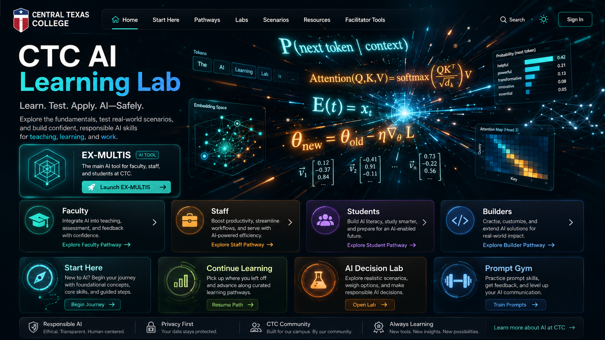

CTC AI Learning Lab
A guided AI learning environment for faculty, staff, students, and builders at Central Texas College.
This site treats AI as something you learn by using: understand the fundamentals, explore safe practice scenarios, build stronger prompts, make better decisions, and connect directly to EX-MULTIS as the primary institutional AI tool.

EX-MULTIS
The lab should not feel disconnected from the real tool your community will use. EX-MULTIS is featured here as the action tool for drafting, guided thinking, exploration, productivity, and applied practice.
- ✓Place EX-MULTIS in the primary call-to-action position on the homepage.
- ✓Use it as the “Apply It” step after foundational learning and practice labs.
- ✓Link role-based pathways to sample EX-MULTIS use cases for faculty, staff, students, and builders.
Choose your pathway
Each pathway is framed around what that audience most needs from AI at CTC. These pages can expand into full module sequences later without changing the site structure.
Faculty
Teaching, feedback, AI literacy, assignment design, and classroom-ready use cases.
Staff
Productivity, email and document support, workflows, service communication, and time savings.
Students
Responsible use, AI literacy, studying smarter, career readiness, and building confidence with AI tools.
Builders
Prompt engineering, app ideas, workflow prototypes, automation thinking, and technical exploration.
Start Here
A first-stop pathway for new users: what AI is, how LLMs work, what EX-MULTIS can help with, and where human verification matters.
Continue Learning
Your next-step card will appear here automatically.
Practice, then apply
The site includes hands-on experiences rather than a passive resource list. Two working examples are included in this starter build.
Learning passport
This browser-local passport tracks completed milestones and provides a foundation for a future printable learning record or certificate layer.